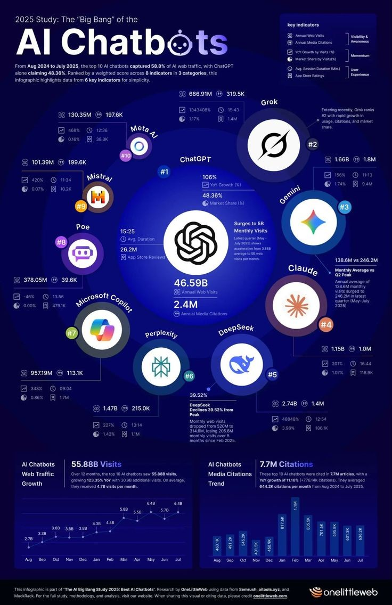
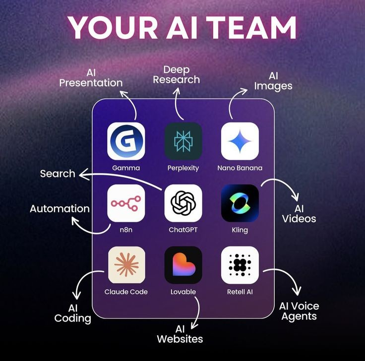
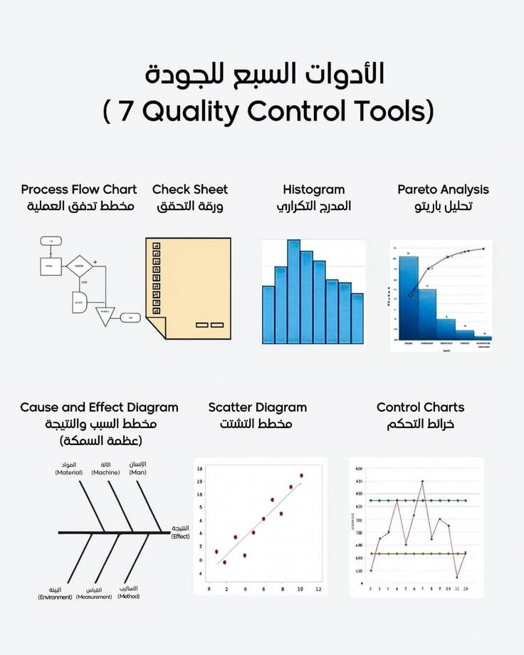

1. تطبيق ChatGPT: ثورة الدردشة والمساعد الشخصي
يُعتبر تطبيق ChatGPT، المطور من قبل شركة OpenAI، الواجهة الأكثر شهرة للذكاء الاصطناعي التوليدي في العالم حالياً، حيث أحدث نقلة نوعية في كيفية تفاعل البشر مع الآلة. يعتمد التطبيق على نماذج لغوية ضخمة تمكنه من فهم السياقات المعقدة والإجابة على الأسئلة في شتى المجالات العلمية والأدبية بدقة مذهلة. لا يقتصر دوره على الدردشة فقط، بل يتعدى ذلك إلى كتابة الأكواد البرمجية، وتلخيص الكتب الضخمة، وصياغة رسائل البريد الإلكتروني الاحترافية بطريقة تحاكي الأسلوب البشري. بفضل التحديثات المستمرة، أصبح التطبيق يدعم البحث المباشر على الإنترنت ومعالجة الصور والملفات، مما جعله أداة لا غنى عنها للطلاب والموظفين والمبرمجين على حد سواء. إن قدرة التطبيق على التكيف مع لهجات ولغات متعددة، بما فيها العربية، جعلته يتصدر قائمة التطبيقات الأكثر تحميلاً واستخداماً عالمياً، حيث يوفر تجربة مستخدم سلسة ومباشرة تدمج بين الذكاء والسرعة في تنفيذ المهام اليومية الصعبة التي كانت تتطلب ساعات من البحث والعمل اليدوي المضني في السابق.

2. تطبيق Google Gemini: المحرك الذكي من جوجل
يعد تطبيق Gemini (المعروف سابقاً بـ Bard) الرد القوي من شركة جوجل في سباق الذكاء الاصطناعي، وهو يتميز بكونه نظاماً متعدد الوسائط بشكل فطري منذ البداية. ما يميز هذا التطبيق هو تكامله العميق مع منظومة جوجل الواسعة، مثل بريد Gmail، وخرائط جوجل، ومستندات Docs، مما يتيح للمستخدم تنظيم حياته الرقمية بذكاء منقطع النظير. يستطيع Gemini تحليل البيانات الضخمة وتقديم إجابات دقيقة مدعومة بأحدث المعلومات من محرك بحث جوجل، كما يتميز بقدرات فائقة في فهم الصور ومقاطع الفيديو وتحليل محتواها بدقة تقنية عالية. بفضل واجهته البسيطة، يمكن للمستخدمين الاعتماد عليه في التخطيط لرحلات السفر، وكتابة التقارير المهنية، وحتى المساعدة في حل المسائل الرياضية المعقدة عبر شرح الخطوات بالتفصيل. كما أن قدرته على معالجة سياقات طويلة جداً تجعله متفوقاً في تحليل المستندات القانونية أو الفنية الطويلة، مما يجعله المساعد الرقمي الأمثل في بيئات العمل الاحترافية التي تتطلب دقة متناهية وسرعة في استرجاع المعلومات وتنسيقها.

3. تطبيق Midjourney: الفن في عصر الخوارزميات
يمثل تطبيق Midjourney طفرة حقيقية في مجال الإبداع البصري، حيث يتيح للمستخدمين تحويل الكلمات المكتوبة إلى لوحات فنية وصور واقعية مذهلة خلال ثوانٍ معدودة. يعمل التطبيق بشكل أساسي عبر منصة "ديسكورد" وواجهات الويب، ويتميز عن منافسيه بجودته الفنية العالية وقدرته على فهم الإضاءة والظلال والتكوينات المعقدة التي تضاهي أعمال المصممين المحترفين. بفضل خوارزمياته المتقدمة، يستطيع Midjourney محاكاة أنماط فنية مختلفة، بدءاً من الواقعية الفوتوغرافية وصولاً إلى الفن السيريالي والرسومات الرقمية الحديثة. يستخدم المصممون والمعماريون وصناع المحتوى هذا التطبيق لتوليد أفكار بصرية سريعة وبناء "لوحات إلهام" لمشاريعهم، مما يقلل الوقت المستغرق في عملية التصميم الأولي بشكل كبير جداً. إن التطور المستمر في إصدارات التطبيق جعله قادراً على إنتاج تفاصيل دقيقة جداً في الوجوه والأنسجة، مما أثار جدلاً واسعاً حول مستقبل المهن الإبداعية، لكنه يظل الأداة الأقوى لكل من يملك خيالاً واسعاً ويريد تحويله إلى واقع ملموس دون الحاجة لإتقان أدوات الرسم التقليدية.
4. تطبيق Claude: الذكاء الملتزم بالقيم الإنسانية
يبرز تطبيق Claude، الذي طورته شركة Anthropic، كواحد من أذكى المنافسين في الساحة، مع تركيز خاص على الأمان والدقة والأسلوب الأدبي الرفيع في الكتابة. ما يجعل Claude مفضلاً لدى الكثير من الكتاب والباحثين هو قدرته على إنتاج نصوص طبيعية للغاية وأقل "آلية" مقارنة بغيره، بالإضافة إلى التزامه الصارم بمعايير أخلاقية تمنع توليد محتوى ضار أو مضلل. يتميز التطبيق بقدرة استيعابية هائلة للملفات، حيث يمكنه قراءة كتب كاملة في ثوانٍ وتقديم ملخصات دقيقة أو الإجابة على أسئلة محددة من داخل تلك النصوص الطويلة، مما يجعله رفيقاً مثالياً للبحث الأكاديمي. كما يتفوق Claude في المهام المنطقية والبرمجية المعقدة، حيث يميل لتقديم شروحات واضحة ومنظمة تساعد المستخدم على فهم "لماذا" تم الوصول لهذه النتيجة. واجهة التطبيق البسيطة والتركيز على الخصوصية جعله خياراً جذاباً للشركات التي ترغب في دمج الذكاء الاصطناعي في سير عملها مع الحفاظ على مستوى عالٍ من الأمان والموثوقية في النتائج، بعيداً عن الهلوسة المعلوماتية التي قد تقع فيها بعض النماذج الأخرى.
5. تطبيق Microsoft Copilot: المساعد الذكي للإنتاجية
يعتبر تطبيق Microsoft Copilot بمثابة "الطيار المساعد" الذي أحدث ثورة في إنتاجية المكاتب من خلال دمج تقنيات OpenAI المتقدمة مباشرة في نظام ويندوز وحزمة برامج Office. هذا التطبيق ليس مجرد بوت للدردشة، بل هو أداة مدمجة تستطيع صياغة مسودات العروض التقديمية في PowerPoint، وتحليل جداول البيانات المعقدة في Excel، وكتابة التقارير في Word بضغطة زر واحدة. يعتمد Copilot على قوة الحوسبة السحابية من مايكروسوفت لربط البيانات بين التطبيقات المختلفة، مما يسهل على الموظفين إدارة الاجتماعات وتلخيص رسائل البريد الإلكتروني في تطبيق Outlook بكفاءة غير مسبوقة. كما يدعم التطبيق ميزات توليد الصور والبحث الذكي المدعوم بالذكاء الاصطناعي عبر محرك البحث Bing، مما يجعله حلاً شاملاً للعمل والدراسة والترفيه في منصة واحدة. بفضل دعمه الكامل للغة العربية وواجهته المتكاملة مع أنظمة التشغيل، أصبح Copilot يمثل مستقبل العمل الرقمي، حيث يقلل من المهام الروتينية المملة ويسمح للمستخدمين بالتركيز على الإبداع واتخاذ القرارات الاستراتيجية بناءً على رؤى ذكية يوفرها التطبيق لحظياً.